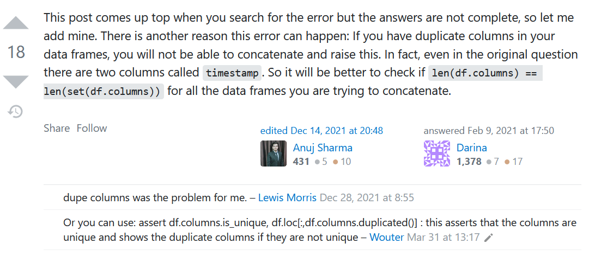

Functional Pandas in Python workflow üêºüêç
Contents
Functional Pandas in Python workflow üêºüêç¬∂
When beginning Data Science, it is common to directly apply Pandas functions on individual dataframes. But what if you are creating code for a Python dataflow? The approach has to completely change.
A great rule of thumb is this:
If you find yourself repeating lines of code, create a loop or lambda function
If you find yourself repeating loops and/or lambda functions, create a Python function
If you find yourself with many functions, create a Python class
Sample functions¶
The packages being discussed in this part are loaded into Python as follows:
import pandas as pd
import numpy as np
Data representation in Python:
A good idea for transformation tracking is to represent a collection of Pandas dataframes using a dictionary because it helps you easily locate a particular dictionary to perform operations on. It can be represented like so:
dictionary = {
'df1': df1,
'df2': df2,
'df3': df3,
}
If you wish to concatenate the dataframes within the dictionary to form one dataframe, run this code:
concatenated_df = pd.concat(dictionary.values(), ignore_index=True)
Warning for data representation in Python:
Be careful to ensure that BOTH your columns and rows have unique names
If when using pd.concat() you keep getting the error message
InvalidIndexError: Reindexing only valid with uniquely valued Index objects even after
modifying the indices of the dataframe, look into your columns.
If your column names fail either of the following logical tests:
len(df.columns) == len(set(df.columns))
assert df.columns.is_unique, df.loc[:,df.columns.duplicated()]
then you probably need to rename them.
Diagnostic code if working with a dictionary with many dataframes would be:
for key in dictionary:
df = dictionary[key]
print(key,'\n','len(df.columns) == len(set(df.columns)) is',
len(df.columns) == len(set(df.columns)),'\n',
'df.columns = '+str(len(df.columns)),'\n',
'set(df.columns = '+str(len(set(df.columns))),'\n',
)
duplicates = [duplicate for duplicate in list(df.columns) if list(df.columns).count(duplicate) > 1]
print(duplicates)
print('\n')
Source: Stack Overflow

Visualizing your dataset¶
üîé The dataframe_describer is really useful in viewing the shape and column names of each
dataframe contained in a dictionary within a particular app.
def dataframe_describer(df,var_name=''):
print(f'{var_name} has {df.shape[0]} rows and {df.shape[1]} columns namely:')
for item in df.columns:
print(f'{list(df.columns).index(item)+1}.', item)
üîé The dataframes_displayed function is really useful in getting summaries of the various columns in each dataframe describing their
measures of central tendency and data distribution if the datatype is numeric (shown in the code below as
np.number)the count, the number of unique values, the mode and its frequency if the datatype is an object (a combination of strings shown in the code below as
'O') or a categorical variable (shown in the code below as'category')
and checking for any missing headers or unwanted data in the last values of the dataset.
def dataframes_displayed(df_dict={}, input_string=''):
boolean=bool()
dataframe_describer(df=df_dict[input_string], var_name=input_string)
for column in df_dict[input_string].columns:
display(df_dict[input_string][column].describe(
include=['O','category', np.number]))
for column in df_dict[input_string].columns:
if column.find('Unnamed:') != -1:
boolean = True
if boolean == True:
display(df_dict[input_string].head(5))
display(df_dict[input_string].tail(5))
else:
display(df_dict[input_string].tail(5))
What does column.find('Unnamed:') != -1 mean?
According to this source:
The str.find method is to find whether there is a character or substring to be found in
a given string or a substring within the range of the start and end index. If found, return
the index of the appearance position, if not found, return -1.
So column.find('Unnamed:') != -1 means that the 'Unnamed' substring is not missing in the
column name.
Modifying your dataframes¶
Sometimes you may wish to do a standard operation on a number of dataframes, so it is helpful to have functions that can do the transformations in one batch, instead of repeating code.
üîé The column_remover is really useful in deleting columns in each dataframe that share the same
column name(s)
def column_remover(removed_columns=[],affected_dfs={}):
modified_dfs = {}
vals = list(affected_dfs.keys())
for val in vals:
modified_df = affected_dfs[val].copy()
modified_dfs[val] = modified_df.drop(removed_columns,axis=1)
return modified_dfs
Changing the actual variable
To reflect a transformation, make a copy of the dataframe, then modify the dataframe. Store it in a new dictionary and return the transformed dictionary.
It would be best practice to then save the transformation like so:
transformed_dataframes = column_remover(
removed_columns=['a','b'],
affected_dfs=original_dataframes)
üîé If we wish to merge changes made to dataframes, ensure the modified dataframes and original dataframes share the same name, then we can run the following code:
original_dataframes = {'df1':df1,
'df2':df2,
'df3':df3}
transformed_dataframes = {'df1':df1,
'df3':df3}
current_dataframes = {**original_dataframes, **transformed_dataframes}
Warning:
Be VERY CAREFUL with the order; the transformed dictionary is put second, so that the update is reflected; if this is not done, the changes will be overwritten.
üîé The blank_row_remover is really useful in deleting blank rows in each dataframe; thresh=4 means that blank rows
and rows that have 3 filled values or less will be deleted.
def blank_row_remover(affected_dfs={}, silent=bool()):
modified_dfs = {}
if silent == False:
print('Before:')
for key in affected_dfs:
blank_rows = affected_dfs[key][
affected_dfs[key].isna().all(axis=1) == True].shape[0]
any_nulls = affected_dfs[key][
affected_dfs[key].isna().any(axis=1) == True].shape[0]
print(f'There were {blank_rows} blank rows and {any_nulls} rows',
f'containing null values in {key}.')
for val in affected_dfs:
modified_df = affected_dfs[val].copy()
modified_dfs[val] = modified_df.dropna(axis=0,how='all',thresh=4)
if silent == False:
print('\n')
print('After:')
for key in modified_dfs:
blank_rows = modified_dfs[key][
modified_dfs[key].isna().all(axis=1) == True].shape[0]
any_nulls = modified_dfs[key][
modified_dfs[key].isna().any(axis=1) == True].shape[0]
print(f'There were {blank_rows} blank rows and {any_nulls} rows',
f'containing null values in {key}.')
return modified_dfs
üîé The header_promoter is really useful in identifying dataframes within a dictionary that are
missing headers, and then promoting the header in that case.
def header_promoter(affected_dfs={}, silent=bool()):
boolean=bool()
modified_dfs = {}
for val in affected_dfs:
for column in affected_dfs[val].columns:
if column.find('Unnamed:') != -1:
boolean = True
if boolean == True:
modified_df = affected_dfs[val].copy()
modified_df.columns = modified_df.iloc[0,:]
# drop the column name source
modified_df = modified_df.drop(index=modified_df.index[0], axis=0)
modified_dfs[val] = modified_df
if silent == False:
for key in affected_dfs:
df_name = key.upper()
df_name = df_name.replace('_',' ')
print(f'{df_name} before:')
display(affected_dfs[key].head(3))
print('\n')
print(f'{df_name} after:')
display(modified_dfs[key].head(3))
print('\n')
return modified_dfs
Notice that in the 3 example functions, we incorporate
output that allows us to see the before and after transformation
use of
silent=bool()argument to show or hide the output as needed
N/B:
You can also name variables using the dictionary keys (which are strings)
If we want the variable to be a global one:
new_number = dict_key + '_new_number'
globals()[new_number] = 25
and if we want it to exist only locally:
new_number = dict_key + '_new_number'
locals()[new_number] = 25
Local variables are stored in the locals() dictionary and global variables are stored in the globals() dictionary.
Leveraging numpy with pandas in Python¶
np.repeat(a=np.array()|pd.Series()|pd.DataFrame(),n,axis=0|1) allows you to repeat each item in a \(n\) number of times, creating either n number of columns if axis=1 or n number of rows if axis=0, while np.tile(a=np.array()|pd.Series()|pd.DataFrame(),n) allows you to duplicate a \(n\) number of times.